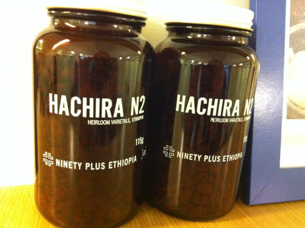

莉園商行

這家店位於中正紀念堂附近, 也是我的愛店, 店內的咖啡豆全選自美國Ninety Plus，Ninety Plus Coffee如同其名，堅持只販售杯測達90分以上的咖啡豆。而Ninety Plus的生豆處理方式又分為W2水洗豆、N2日曬豆和H2蜜處理等，因此店內的菜單上會清楚的告知採用的處理方式，最後再進行煮法的挑選(義式濃縮和V60、Chemex兩種手沖壺)。 老闆非常有個性, 外表讓人敬畏三分, 沖煮也十分的龜毛, 咖啡豆要篩粉, 然後再親手挑掉細粉, 最後為了確保手沖出來的, 下座底部還要放個加熱燈座。 在老闆的巧手之下, 一杯咖啡整體的口感真的很厲害, 平衡的酸感, 花香, 核果香都在鼻腔口腔裡爆發出來。 老闆看起來很嚴肅, 所以那次去沒有找他攀談, 只是靜靜地喝咖啡Q Q 這裡很適合想安靜喝杯咖啡的人, 從老闆的龜毛看出他對咖啡的用心, 每一杯味道都很厲害。